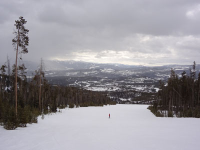
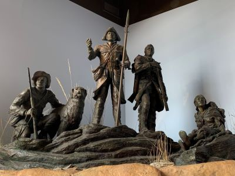
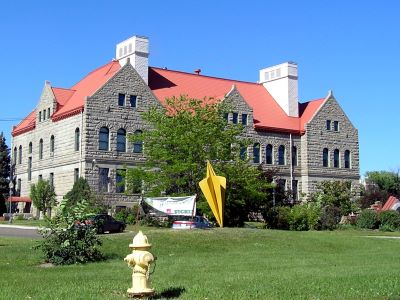
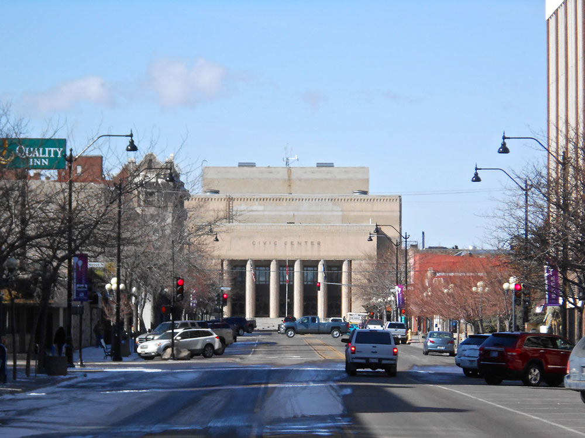
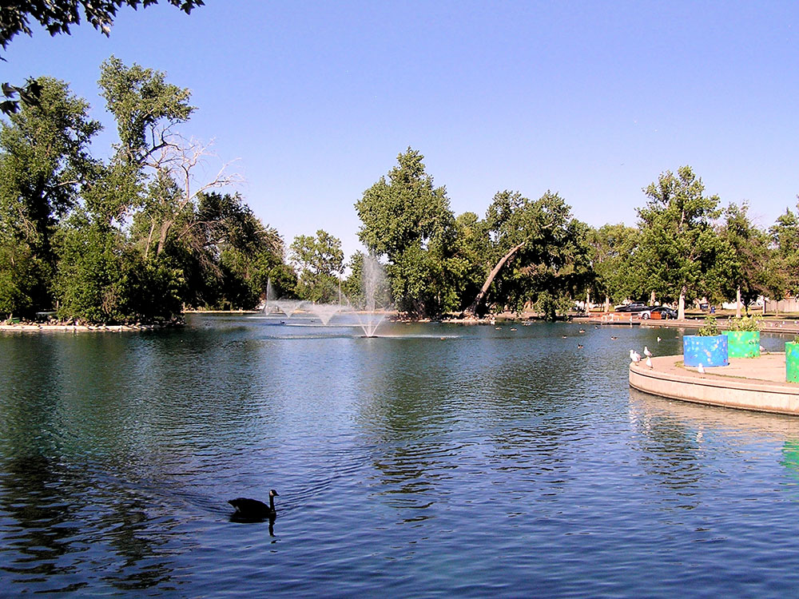
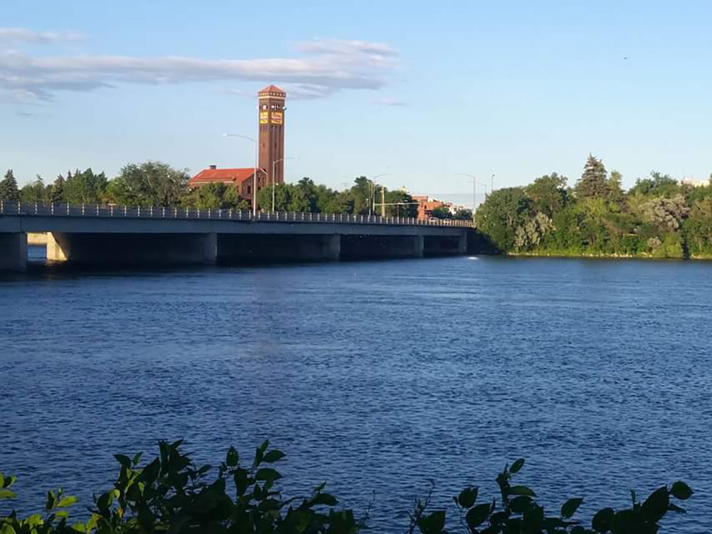
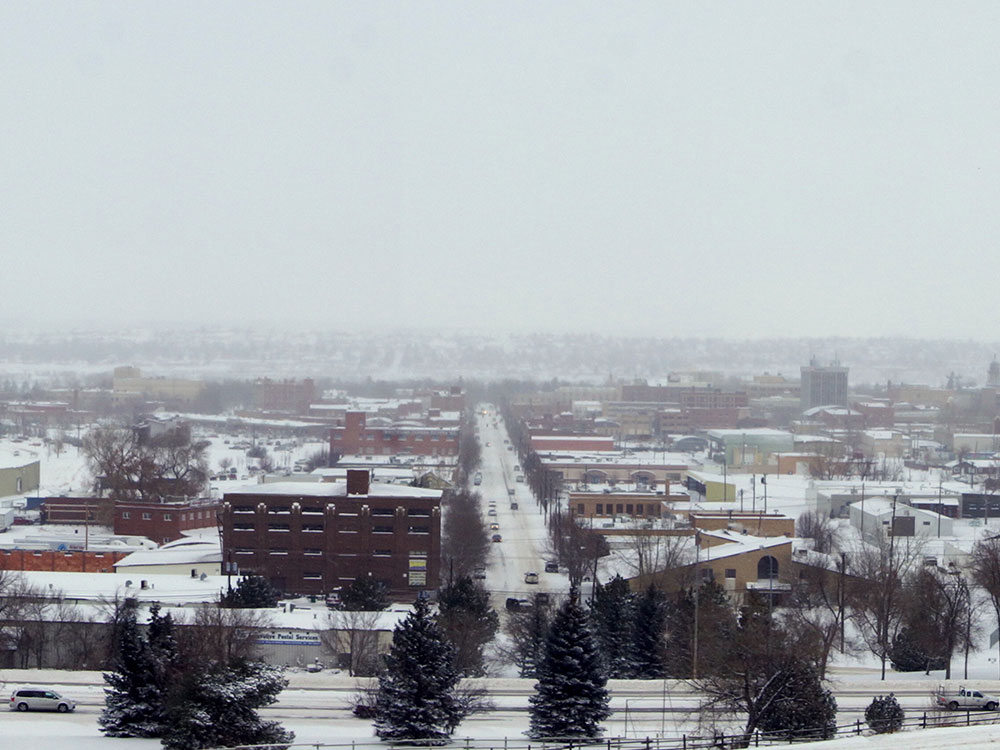

Cultural, commercial and financial center in the central part of the state located just east of the Rocky Mountains and is bisected by the Missouri River
General Information
From Missoula (165 miles): Head southeast on E Broadway St toward N Pattee St. Follow MT-200 E to I-15BL/Central Ave W in Great Falls. Take exit 280 from I-15 S. Follow I-15BL to 4th St N.
From Bozeman (186 miles): Get on I-90 W from N Rouse Ave and E Oak St. Follow I-90 W to US-287 N in Broadwater County. Take exit 274 from I-90 W. Get on I-15 N/US-287 N in Helena. Follow I-15 N to I-15BL/MT-200 E/US-89 S in Cascade County. Take exit 278 from I-15 N. Follow I-15BL/MT-200 E/US-89 S and 2nd St S to 4th St S in Great Falls.
From Billings (219 miles): Continue to Golden Valley County. Continue on MT-3 N/US-12 W. Take US-87 N to 6th St S in Great Falls. Continue on 6th St S. Drive to 4th St S.
Overview
Great Falls is a city in north-central Montana on the Missouri River, named for the series of five waterfalls on the river that Lewis and Clark encountered in 1805 and had to portage around. It is known as the "Electric City" for its hydroelectric dams, and for its western art, its history of the Lewis and Clark Expedition, and its easy access to the Rocky Mountain Front. The city of about 60,000 is the third-largest in Montana and sits at the center of a wide, windswept plains region.
Visitors come to Great Falls for the Lewis and Clark National Historic Trail Interpretive Center, the C.M. Russell Museum, and the River's Edge Trail. They also come for Giant Springs, one of the largest freshwater springs in the country, for the Paris Gibson Square Museum of Art, and for the Rocky Mountain Front to the west.
History
The Blackfeet and Salish peoples hunted bison along the Missouri, and in June 1805 Meriwether Lewis found the Great Falls of the Missouri and wrote that they were "the grandest sight I ever beheld." The expedition had to portage 18 miles around five falls, which took a month. Great Falls was founded in 1883 by Paris Gibson, who saw the potential of the falls for hydroelectric power, and with the arrival of the Great Northern Railway, it grew into a smelting and milling center. Cowboy artist Charles M. Russell lived and worked here from 1892 until 1926, and Malmstrom Air Force Base, established in 1955, is a major employer.
Sightseeing and Popular Landmarks
The Lewis and Clark Interpretive Center sits on a bluff overlooking the Missouri and has exhibits on the expedition's portage, and Giant Springs State Park nearby has a spring that flows 156 million gallons a day. The C.M. Russell Museum has the largest collection of Russell's art and his log cabin studio and home, and Ryan Dam and Black Eagle Falls show the falls. The Old Chicago Building and the Electric City Water Park are downtown, and the Great Falls Historic Trolley is a tour.
Culture and Museums
The C.M. Russell Museum has hundreds of paintings, sculptures, and artifacts of the American West, and the Paris Gibson Square Museum of Art shows contemporary art in a former high school. The Children's Museum of Montana and the Great Falls Symphony are other attractions, and the Western Art Rendezvous, called the Russell Auction, takes place each March. The Montana State Fair in July is another popular event.
Parks
The River's Edge Trail is a 60-mile trail along the Missouri River, with views of the falls and dams, and Giant Springs Heritage State Park has a fish hatchery and a boardwalk. Gibson Park downtown has a lake and a rose garden, and Smith River State Park is a famous float stream nearby. The Rocky Mountain Front, with Glacier National Park about 130 miles northwest, offers wilderness and wildlife.
Seasons and Weather
Great Falls has a semi-arid continental climate. Summers are warm, with highs in the 80s°F, and winters are cold, with highs in the 20s and 30s°F and about 60 inches of snow, but chinook winds can bring dramatic warm-ups. Wind is a constant feature on the plains.
This article uses material from Wikipedia as well as information from official tourism and institutional sources. Key references include Visit Great Falls, C.M. Russell Museum, Lewis and Clark National Historic Trail Interpretive Center, Montana Office of Tourism, and National Weather Service Great Falls. Wikipedia material is from the article "Great Falls, Montana", and is available under the Creative Commons Attribution-Share-Alike License 3.0.
Featured Locations

Lambchop22, CC BY-SA 3.0, via Wikimedia Commons; Image Size Adjusted
C M Russell Museum
Art museum and historic home dedicated to the life and work of Western artist Charles M. Russell, featuring original paintings, sculptures, and personal artifacts.

Jeff P from Berkeley, CA, USA, CC BY 2.0, via Wikimedia Commons; Image Size Adjusted
.jpg){kind=link}
Lewis and Clark Interpretive Center
Interactive museum and educational facility exploring the Lewis and Clark Expedition through exhibits, dioramas, films, and riverfront trails.

Jeff P from Berkeley, CA, USA, CC BY 2.0, via Wikimedia Commons; Image Size Adjusted
Paris Gibson Square Museum of Art
Contemporary art museum housed in a historic school building, featuring regional exhibitions, sculpture garden, and community art programs.
Lambchop22, CC BY-SA 3.0, via Wikimedia Commons; Image Size Adjusted
Rivers Edge Trail
Extensive multi-use trail system following the Missouri River, offering scenic views, public art, and access to parks and historic sites.



